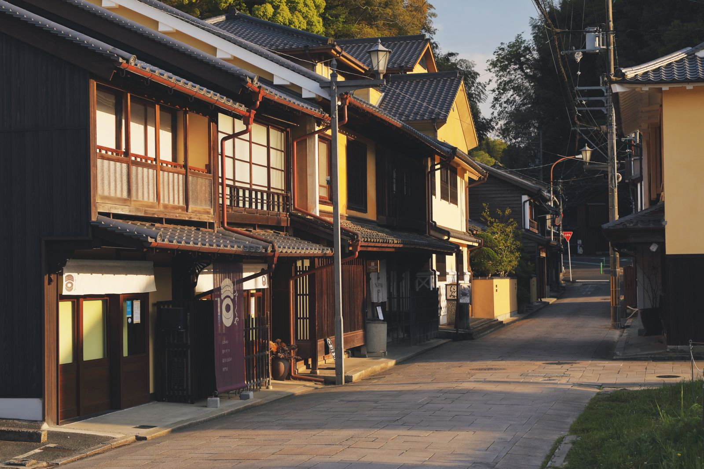
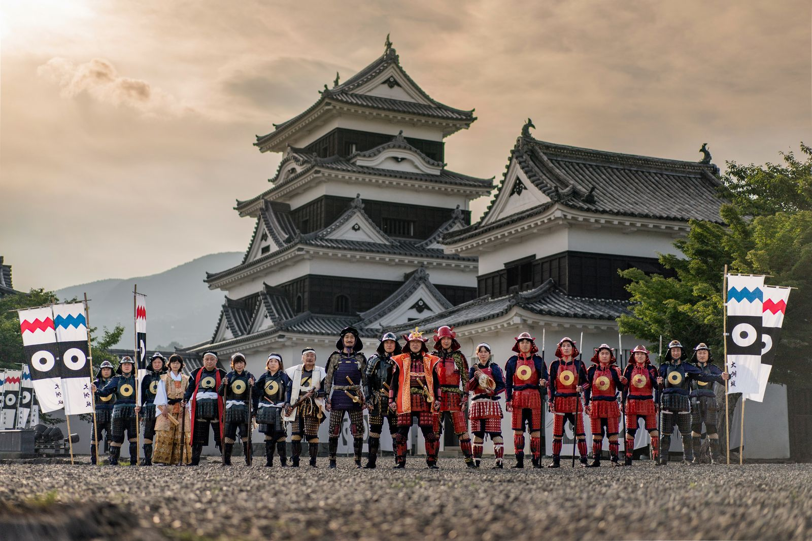
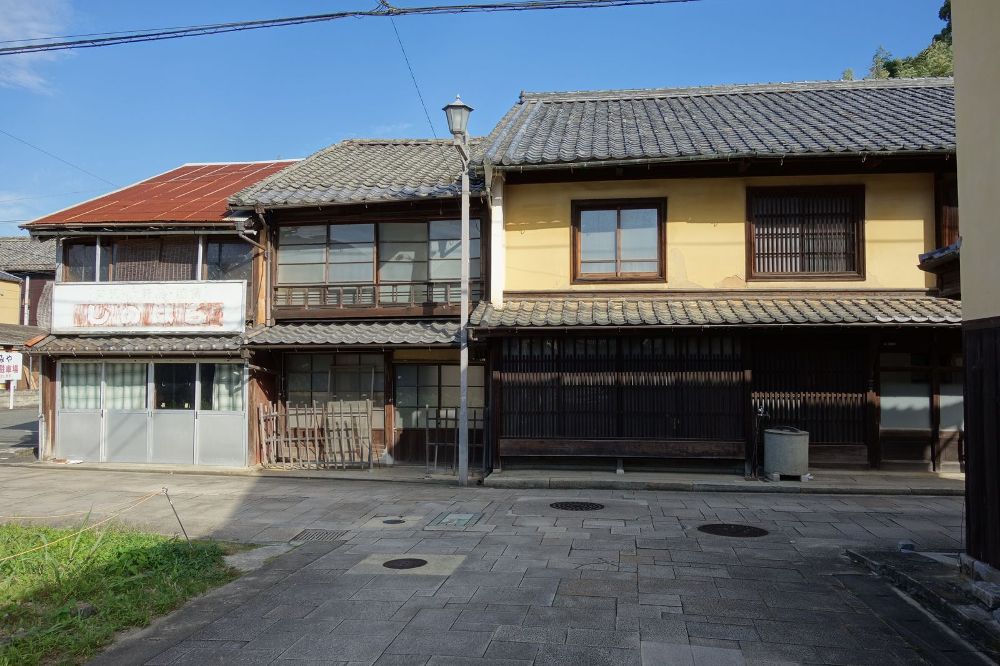
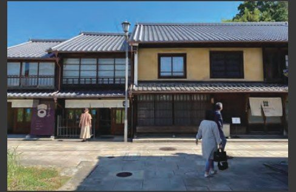
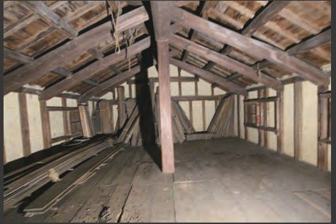
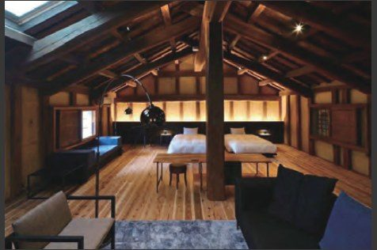
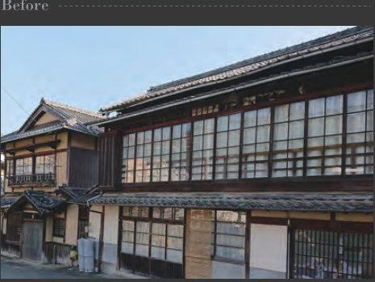
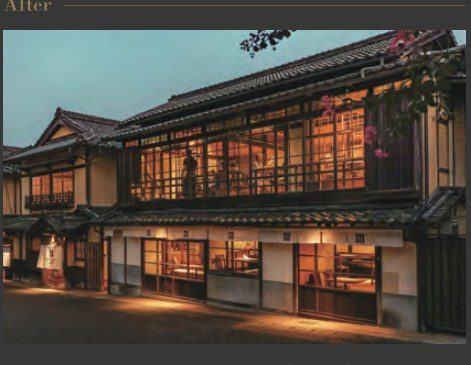

まちはどこへ向かう？
大洲のまちづくりは、城下町の再生（まちづくり1.0）を土台に、2030年に向けた次の段階（まちづくり2.0）に入っています。城下町の10年を古い順にたどり、そのあと2030年に目指すことを並べます。
まちづくり1.0 ／ 2016〜2026
城下町の古い建物の取り壊しが相次ぐ
大洲の城下町には、歴史的な風情を感じられる建物が約100件残っていました。ところが2016年から17年にかけて、所有者の高齢化や相続、修繕費の負担から、取り壊しや建て替えが一斉に進む時期が訪れます。
広い範囲で町並みが失われれば、消えるのは景色だけではありません。まちの記憶と、地域らしさそのものでした。
地域の若者が、空き家の掃除から始めた

2017年4月、地域の若者を中心に「YATSUGI（やつぎ）」が結成されます。最初にやったのは大きな計画づくりではなく、空き家の掃除と障子の張り替え。人の出入りがあるだけで空き家の傷みは遅くなる——小さな手入れがまちの時間を稼ぎました。
その延長で生まれた町家イベント「城下のMACHIBITO」は、100年前のにぎわいを再現する催しとして3年間開かれ、最多の年には町家18棟・123ブースが出店。事業者たちが「町家で商いができる」と気づくきっかけになりました。
同じ年の6月には、市役所と伊予銀行の職員による勉強会も始まり、先進地の丹波篠山を訪ねて学びを重ねました。
市・銀行・企業の5者が手を組み、まちづくりの会社ができる
2018年4月、大洲市・バリューマネジメント・ノオト・NOTE・伊予銀行の5者で連携協定を結びました。同じ年の7月、まちづくりの司令塔となる一般社団法人キタ・マネジメントが設立され、まちづくりファンドもつくられます。
事業費約10億円（公的資金約5億円＋民間資金約5億円）が、短い期間にまちへ注がれました。
城に泊まる宿と、まち全体をホテルにする宿が同時に開業

前の市長の急逝、西日本豪雨、コロナ禍。苦難が続くなかでも、歩みは止まりませんでした。
2020年7月、日本初の木造天守に泊まる「大洲城キャッスルステイ」と、まち全体がホテルになる分散型ホテル「NIPPONIA HOTEL 大洲 城下町」が同時に開業。取り壊されるはずだった商家や蔵が、客室やレストラン、店としてよみがえっていきました。
世界の持続可能な観光地トップ100に選ばれる
2022年9月、持続可能な観光地を選ぶ国際的な団体グリーン・デスティネーションズの「世界の持続可能な観光地TOP100」に選ばれました。
文化・伝統を守る部門で世界1位。トップ100にも2年続けて選ばれる
2023年3月、グリーン・デスティネーションズの「The Green Destinations Story Awards（ITB Berlin）」の「文化・伝統保全」の部門で世界1位になりました。
同じ年の10月には、「世界の持続可能な観光地TOP100」に2年続けて選ばれています。
持続可能な観光地の国際認証で、シルバー賞を受賞（四国で初めて）
同じグリーン・デスティネーションズの認証で、シルバーアワードを四国で初めて取得しました。壊されかけた城下町の再生が、世界の観光の最前線で評価されたことになります。
大洲城キャッスルステイが、ジャパン・ツーリズム・アワードでダブル受賞
2026年9月、第10回ジャパン・ツーリズム・アワードで、大洲城キャッスルステイが「学生が選ぶジャパン・ツーリズム・アワード」と「審査委員特別賞」の2つを受賞しました。
まちづくり1.0 ／ いま
分散型ホテルが開業した2020年7月より前と、いまを比べます。

改修前
改修後村上邸（江戸期） → ホテルのフロントと客室に（2020年7月）

改修前
改修後村上邸の土蔵（江戸期） → 小屋組を見せる客室に（2021年8月）

改修前
改修後浦岡邸（大正期） → レストランと客室に（2020年7月）
ホテルのほかにも、店や宿に
古い建物を受け継いで、店や宿を営む事業者もいます。
城下町に進出した事業者
41開業前 4 → いま
2026年度途中・撤退した4を含む
生まれた雇用（延べ）
166人開業前 14人 → いま
2024年度まで
城下町へ移り住んだ人
36人開業前 2人 → いま
2024年度まで
外国から市内に泊まった人
5,363人2022年度 142人 → いま
2025年度
分散型ホテル 毎年客室を増やし、第四期の開発まで終えて、日本最大級の分散型ホテルになりました。客室を増やすこと自体が、町並みを守る仕組みになっています。
大洲カンパニー 「大洲がちょっと気になる」だけで誰でも無料で参加できる、まちづくりを自分ごとにする集まりです。このLINEも、その入口のひとつです。
開業前＝分散型ホテルが開業した2020年7月より前の値（おおず未来のまちづくり構想の表）。出典：キタ・マネジメント『大洲まちづくりブック』（2026年5月）・「令和7年度実績報告」／おおず未来のまちづくり構想（2026年3月）
まちづくり2.0 ／ OZU 555 PROJECT
まちづくり2.0。このあとの数字は、インパクトレポートの指標の台帳から自動で書き換わります（台帳の更新 2026年9月28日）。
「おおず未来のまちづくり構想」を発表
これまでの10年は、壊れかけたものを直す時期でした。構想では、これからの10年を「まちづくり2.0」と呼び、2つの考え方で進めます。
みんなで関わる（共創型） 行政や特定の事業者だけが進めるのではなく、地域の内と外の人が対等に組み、それぞれが自分から関わる進め方です。
関わるほど良くなる（リジェネラティブ） いまあるものを保つだけでも、壊れたものを元に戻すだけでもなく、人が関わるほどまちが良くなり、自分たちで変わり続けていく状態を目指します。
中心にあるのは、住んでいなくても大洲に関わり続ける人（関係人口）を増やすこと。大洲にとってのまちづくりは、関わる人を増やすことです。その主役は、大洲に思いを寄せるあなたです。
人口5万人以下の自治体は、全国の3分の2を占めます。人口が減り、まちの中心が空いていく大洲の課題は、日本の地方都市の縮図です。だからこそ、大洲がこの課題を乗り越える形をつくれば、同じ課題を抱える日本中のまちの道しるべになります。城下町（肱南）での成果を、駅のある肱北、山の河辺、海の長浜へ広げていきます。
大洲の未来は、みんなで描く。
ひと、まち、つながる、ワクワクの物語、はじまる。——おおず未来のまちづくり構想（2026年3月）
問い
人口5万人以下のまちは、この先も続いていけるか。
いちばん上で見る数字は、人の出入り（転入と転出の差）。準備中
直接は動かせないので、その手前の「来る → 応援する → 担い手になる → 住む」を数字で追います。
OZU 555 PROJECT ＝ 2030年の3つの目標
※ 先進事例は、観光・ものづくり・教育・健康・AI の5つのテーマで、外の第三者に評価されるものを1件ずつ。まちづくり1.0 の城泊・分散型ホテル・世界1位の受賞は数えません。
※ 2030年を目標の年として「おおずビジョン2030」の名で進めます。
観光 ここでしかできない歴史体験を大洲の柱の産業にし、関わる人を生む最大の入口に。3施設あわせて20万人、大洲カンパニーの延べ5,000人登録を目指し、365日の観光カレンダーづくりや、鵜飼・棚田の活かし方の見直しを進めます。
ものづくり 養蚕や木蝋など、大洲の地場産業に受け継がれてきたものをいまに合わせて組み直し、「大洲でつくれば稼げる」場をつくります。年商1,000万円規模のヒット商品を、5つの事業者で新しく開発します。
教育 まち全体を教室に。行政・企業・学校が組む学びの場をつくり、中高生の探究学習からインターンシップまで、まちへの誇りを育て、人が大洲へ戻ってくる流れをつくります。
健康 100年の歴史をもつ建物と自然を、心と体を整える場として活かします。神社でのヨガや肱川沿いを走るランなど30種のプログラムを常に用意し、見て回る観光から、滞在して元気になる旅へ。大洲アンバサダーの制度もつくります。
AI 合言葉は「Invisible AI, Visible Humanity（見えないAI、際立つ人間性）」。AIが舞台裏で働き、人は文化的な活動に打ち込めるまちを目指します。このLINEも、その一歩です。
出典：おおず未来のまちづくり構想（2026年3月・キタ・マネジメント／バリューマネジメント／伊予銀行）。
出どころ